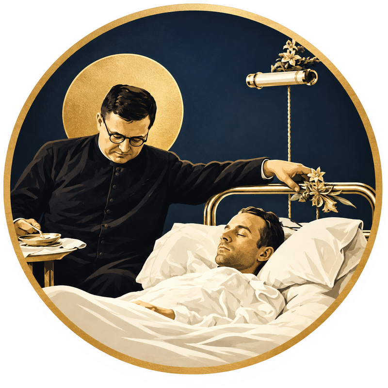

Um padre perto de quem precisa da Unção dos Enfermos
Escolha o estado, a cidade e o hospital ou a clínica. Mostramos as paróquias católicas mais próximas.
O que é a Unção dos Enfermos?
É o sacramento da Igreja para quem está gravemente doente, vai passar por uma cirurgia ou se aproxima da morte. Dá conforto, fortalece a esperança, perdoa pecados e, se Deus quiser, ajuda na recuperação.
Como pedir
- Escolha o hospital onde o doente está.
- Ligue para a paróquia indicada e diga o hospital, o quarto e o nome do enfermo.
- Avise a recepção ou a capelania do hospital que um padre vai chegar.
Emergência médica? Ligue 192 (SAMU). Em perigo de morte, peça ao padre com urgência.
📲 Use como aplicativo no celular
Salve o Patronato de Enfermos na tela inicial e abra com um toque, como um aplicativo. Não precisa de loja de aplicativos.
iPhone / iPad (Safari)
- Abra este site no Safari (é o jeito mais garantido no iPhone).
- Toque no botão Compartilhar (quadrado com uma seta para cima, na barra inferior).
- Role a lista e toque em “Adicionar à Tela de Início”.
- Toque em Adicionar. O ícone aparece na sua tela inicial.
Android (Chrome)
- Abra este site no Chrome.
- Toque nos três pontinhos (⋮) no canto superior direito.
- Toque em “Instalar aplicativo” ou “Adicionar à tela inicial”.
- Confirme em Instalar. O ícone aparece na tela inicial.
Dados abertos: hospitais e clínicas do CNES (Ministério da Saúde); igrejas do Overture Maps/OpenStreetMap. Telefones e endereços podem estar desatualizados — confirme por telefone e pergunte também na capelania do hospital. Distâncias e tempos são estimativas em linha reta.